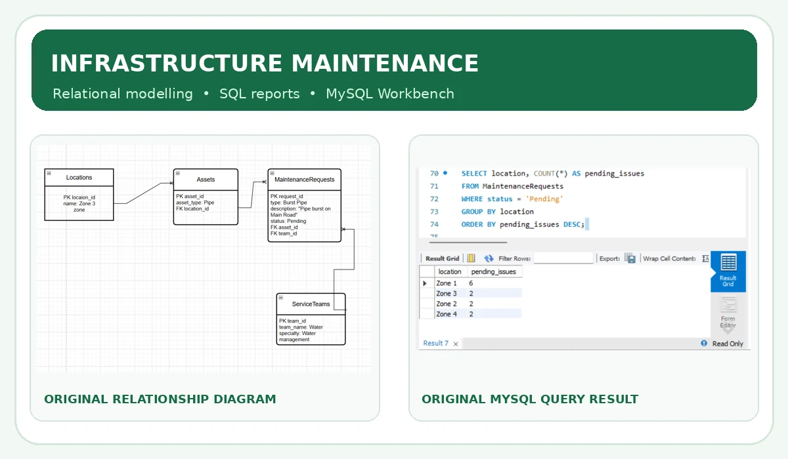
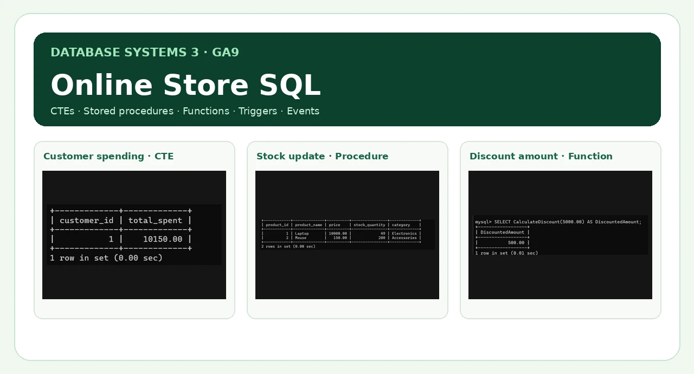
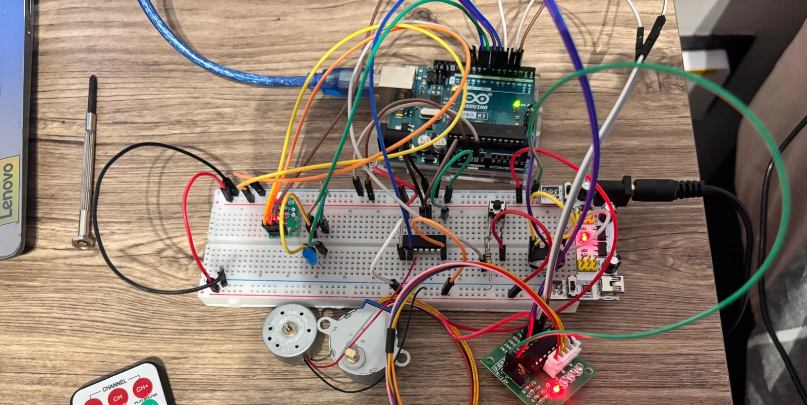
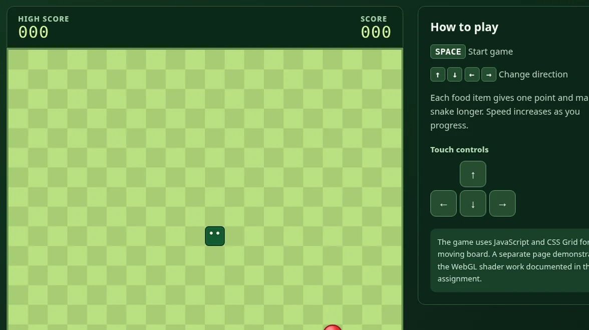
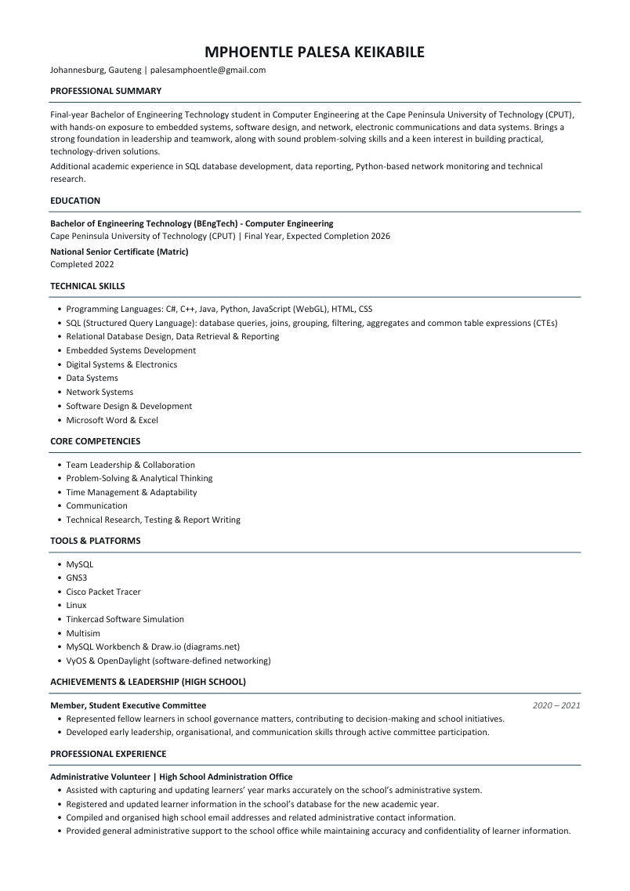

Building practical solutions through technology and engineering.
Hello, I'm Mphoentle Palesa Keikabile. Welcome to a collection of my academic work in embedded systems, software, virtual networks, database programming and intelligent automation.
Curious about how hardware, software and data work together.
I am studying towards a Bachelor of Engineering Technology in Computer Engineering at the Cape Peninsula University of Technology (CPUT). My coursework has involved writing programs, designing digital and embedded systems, configuring computer networks, modelling databases and preparing technical investigations.
I enjoy learning new tools, solving practical problems and turning engineering ideas into systems that can be demonstrated and tested. This portfolio highlights selected academic projects and what I learned while working on them.
Explore my projects
Click any project to learn about its problem, implementation, technologies and results. All seven cards open their own pages.

AI-Based Smart Home Automation
Exploring intelligent, sensor-informed home automation and more efficient use of available energy.

Software-Defined Virtual Network
Designed and validated a four-router virtual network with dynamic routing and controller integration.

Cape Town Infrastructure Maintenance Database
A 2025 MySQL project with relational design, actual query screenshots and an interactive sample-data explorer.

Online Store Database & Advanced SQL
Advanced SQL coursework: CTE reporting, stored procedures, functions, triggers and scheduled events.

Solar-Powered Washing Machine Controller
A tested academic prototype with real circuit photos, Tinkercad simulation, Arduino code and power-aware washing-cycle logic.

Interactive Snake Game & WebGL
Play the working JavaScript Snake game and explore a separate WebGL graphics demonstration.

Traffic Engineering & Graph Theory
Graph-based network routing and optimisation concepts, with an interactive route explorer and Python example.
Skills and technologies
Technologies used or studied through engineering coursework and portfolio projects.
Programming & web
Databases & analysis
Networking & systems
Hardware & simulation
Academic background
Cape Peninsula University of Technology (CPUT)
Secondary education
*Update the qualification status when completion has been officially confirmed.
Certifications
LinkedIn Learning
LinkedIn Learning
View my CV
A two-page overview of my Computer Engineering education, programming skills, academic projects, certifications and professional experience.

Mphoentle Palesa Keikabile
Computer Engineering · Cape Peninsula University of Technology
My CV covers my academic background, software and electronics skills, networking and database work, selected projects and certifications.
This public copy excludes my date of birth, gender and phone number. For recruitment enquiries, please contact me by email.